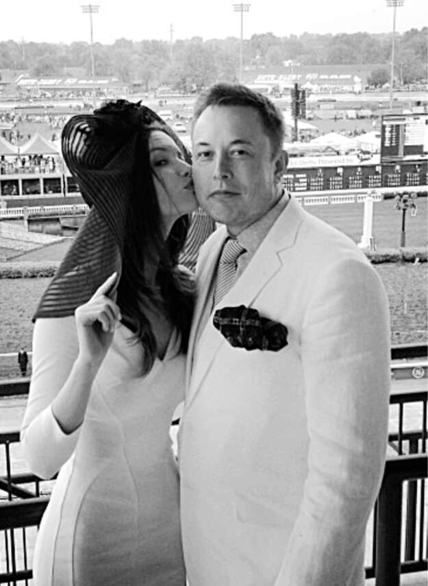

“Tôi có thể đi con đường khó khăn”
Musk đã cầu hôn Talulah Riley vài tuần sau khi họ gặp nhau vào mùa hè năm 2008, nhưng cả hai đều đồng ý rằng họ nên đợi khoảng hai năm trước khi thực sự kết hôn.
Cảm xúc của Musk dao động từ lãnh đạm đến thiếu thốn rồi đến phấn khích, điều cuối cùng thể hiện rõ nhất khi anh yêu. Riley trở lại Anh vào tháng 7 năm 2009 để đóng vai chính trong St. Trinian’s 2, phần tiếp theo của bộ phim hài về trường nội trú nữ mà cô đã tham gia hai năm trước đó, và vào ngày quay phim đầu tiên, tại một ngôi nhà trang viên gần quê hương thời thơ ấu của cô ở phía bắc London, cô đã nhận được năm trăm bông hồng từ Musk. “Khi anh ấy tức giận, anh ấy rất giận, và khi anh ấy vui, anh ấy rất vui, và anh ấy gần như trẻ con trong sự nhiệt tình của mình,” cô nói. “Anh ấy có thể rất lạnh lùng, nhưng anh ấy cảm nhận mọi thứ một cách rất thuần khiết, với một chiều sâu mà hầu hết mọi người không có được.”
Điều gây ấn tượng nhất với Riley là thứ mà cô gọi là “đứa trẻ bên trong người đàn ông”. Khi hạnh phúc, con người trẻ con bên trong này có thể biểu hiện một cách cuồng nhiệt. “Khi chúng tôi đi xem phim, anh ấy sẽ bị cuốn theo một bộ phim ngớ ngẩn đến mức anh ấy sẽ nhìn chằm chằm vào màn hình với miệng hơi há ra cười, rồi cuối cùng anh ấy sẽ lăn lộn trên sàn, ôm bụng.”
Nhưng cô cũng nhận thấy rằng đứa trẻ bên trong người đàn ông có thể được thể hiện theo một cách u tối hơn. Vào giai đoạn đầu của mối quan hệ, anh thường thức khuya và kể cho Riley nghe về cha mình. “Tôi nhớ một trong những đêm đó, anh ấy bắt đầu khóc, và điều đó thực sự khủng khiếp đối với anh ấy,” cô nói.
Trong những cuộc trò chuyện đó, Musk đôi khi rơi vào trạng thái như bị thôi miên và kể lại những điều mà cha anh thường nói. “Anh ấy gần như không tỉnh táo, không ở trong phòng với tôi, khi anh ấy nói với tôi những điều này,” cô nhớ lại. Nghe những câu mà Errol đã dùng để mắng nhiếc Elon khiến cô bị sốc, không chỉ vì chúng tàn nhẫn mà còn vì cô đã nghe Elon dùng một số câu tương tự khi anh tức giận.
Là một cô gái trầm lặng, lịch sự đến từ vùng quê nước Anh yên bình, cô biết rằng hôn nhân với Musk sẽ đầy thử thách. Anh ấy thú vị và mê hoặc, nhưng cũng trầm tư và chất chứa nhiều tầng lớp phức tạp. "Ở bên tôi có thể rất khó khăn", anh nói với cô. "Đây sẽ là một con đường chông gai."
Cô quyết định đồng hành cùng anh. "Được thôi", một ngày nọ cô nói với anh. "Em có thể đi trên con đường khó khăn."
Họ kết hôn vào tháng 9 năm 2010 tại Nhà thờ Dornoch, một nhà thờ từ thế kỷ XIII ở vùng Cao nguyên Scotland. "Tôi theo đạo Thiên Chúa, còn Elon thì không, nhưng anh ấy đã rất tử tế đồng ý làm lễ cưới trong nhà thờ", Riley nói. Cô mặc một "chiếc váy công chúa lộng lẫy của Vera Wang", và cô tặng Musk một chiếc mũ chóp cao và gậy để anh có thể nhảy múa như Fred Astaire, người mà cô đã cho anh xem phim. Năm cậu con trai của anh, mặc những bộ tuxedo may đo, được giao nhiệm vụ mang nhẫn và phù rể, nhưng Saxon, con trai mắc chứng tự kỷ của anh, đã rút lui, những cậu bé khác bắt đầu đánh nhau, và chỉ có Griffin thực sự đi đến cuối lối đi. Nhưng Riley nhớ lại, chính những tình huống đó đã làm tăng thêm niềm vui.
Bữa tiệc sau đó được tổ chức tại Lâu đài Skibo gần đó, cũng được xây dựng vào thế kỷ XIII. Khi Riley hỏi Musk anh muốn gì, anh trả lời: "Phải có tàu đệm khí và lươn". Đó là một câu thoại trong vở kịch Monty Python, trong đó John Cleese đóng vai một người Hungary cố gắng nói tiếng Anh bằng một cuốn sách cụm từ sai sót và nói với một người bán hàng: "Tàu đệm khí của tôi đầy lươn". (Nó thực sự hài hước hơn những gì tôi vừa kể.) "Khá khó khăn", Riley nói, "vì bạn cần giấy phép để vận chuyển lươn giữa Anh và Scotland, nhưng cuối cùng chúng tôi đã có một chiếc tàu đệm khí nhỏ lưỡng cư và lươn". Ngoài ra còn có một chiếc xe bọc thép chở quân mà Musk và bạn bè của anh đã dùng để nghiền nát ba chiếc xe phế liệu. "Tất cả chúng tôi lại được làm những cậu bé", Navaid Farooq nói.
Riley thích tổ chức những bữa tiệc sáng tạo, và Musk, mặc dù vụng về trong giao tiếp xã hội (hoặc có lẽ chính vì điều đó), lại có một niềm đam mê kỳ lạ với chúng. Chúng cho phép anh ấy được tự do, đặc biệt là trong những lúc căng thẳng, mà đối với anh, hầu hết thời gian đều như vậy. "Vì vậy, tôi thường tổ chức những bữa tiệc rất hoành tráng chỉ để anh ấy được giải trí", cô nói.
Xa hoa nhất là sinh nhật lần thứ bốn mươi của anh vào tháng 6 năm 2011, chưa đầy một năm sau đám cưới của họ. Cùng với ba chục người bạn, anh và Talulah đã thuê toa xe trên chuyến tàu tốc hành Phương Đông từ Paris đến Venice.
Họ gặp nhau tại Khách sạn Costes, một cơ sở sang trọng gần Place Vendôme. Một vài người trong số họ, dẫn đầu bởi Elon và Kimbal, đã đến một nhà hàng sang trọng, và khi họ đang trên đường trở về khách sạn, họ quyết định thuê một vài chiếc xe đạp và dạo quanh thị trấn. Họ đạp xe cho đến 2 giờ sáng, sau đó hối lộ khách sạn để giữ quầy bar mở cửa cho họ. Sau một giờ uống rượu, họ quay lại xe đạp và đến một quán rượu dưới lòng đất tên là Le Magnifique, nơi họ ở lại cho đến 5 giờ sáng.
Hôm sau, họ dậy lúc 3 giờ chiều để kịp bắt chuyến tàu. Khoác lên mình những bộ tuxedo lịch lãm, họ thưởng thức bữa tối sang trọng trên chuyến tàu Orient Express với trứng cá muối và sâm panh. Tiếp đó là màn trình diễn riêng tư của nhóm Lucent Dossier Experience, một đoàn nghệ thuật steampunk với âm nhạc avant-garde, những màn nhào lộn trên không và múa lửa, khá giống Cirque du Soleil nhưng gợi cảm hơn. Kimbal kể lại: "Mọi người treo lơ lửng trên trần, một cảnh tượng kỳ lạ trên toa tàu Orient Express cổ kính." Riley thỉnh thoảng hát riêng cho Elon nghe bài "My Name Is Tallulah" trong phim Bugsy Malone. Elon nói rằng điều ước duy nhất của anh trong ngày sinh nhật là Riley hát bài đó cho cả buổi tiệc. "Tôi không thường hát nên khá hồi hộp, nhưng tôi đã hát vì anh ấy", cô chia sẻ.
Musk không có nhiều mối quan hệ bền vững, cũng như không có nhiều giai đoạn ổn định trong cuộc đời. Chắc chắn hai điều này có liên quan đến nhau. Trong số ít những mối quan hệ như vậy, có mối quan hệ của anh với Riley, và những năm tháng anh ở bên cô - từ khi họ gặp nhau năm 2008 đến cuộc ly hôn lần hai vào năm 2016 - cuối cùng lại là khoảng thời gian ổn định tương đối dài nhất trong cuộc đời anh. Nếu anh coi trọng sự ổn định hơn sóng gió, cô ấy sẽ là người hoàn hảo dành cho anh.

Cùng Talulah tại Kentucky Derby